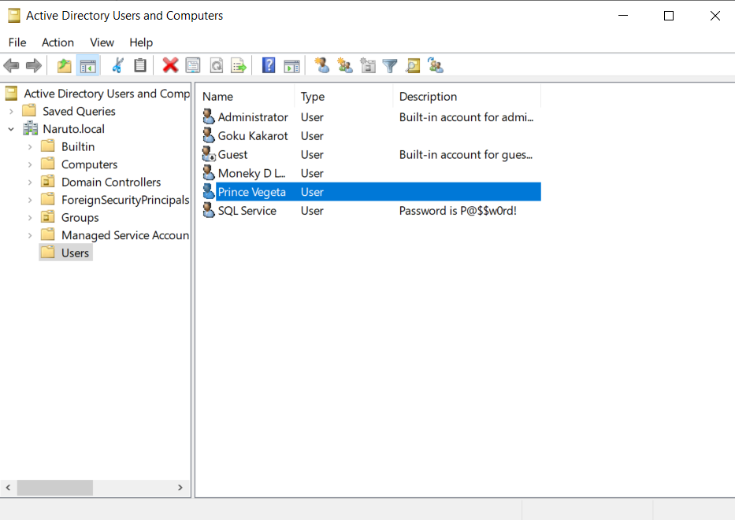

I was stucked at installing the machines as Microsoft Education as was selected by default but we have ti select microsoft enterprise instead.
I think there was problem in the ISO so i downloaded a new ISO and tried installing and it worked like a charm.
